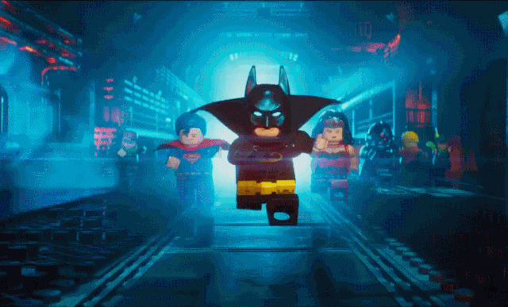

Coffee-Games KMime
<
Tipos de Cafe Disponibles

- Capuchino Clasico (1)
- Capuchino vainilla (2)
- Caffe Descafeinado (3)
- Caffe Latte (4)
- Chocolate(5)
Videojuegos Disponibles

- FIFA 17: Ultimate Team (1)
- Grand Theft Auto V (2)
- Call of Duty: Infinite Warfare (3)
- LEGO Marvel Vengadores (4)
- LEGO Marvel Super Heroes(5)

KMime es una cafeteria que te ofrece diversion, entretenimiento y alimentacion, dando acceso a una
sala de juegos como futbolito, billar, entreo otros, ademas de videojuegos de XBOX y PLAY STATION.
Toma en cuenta que ademas podras disfrutar de una variedad de comidas mientras juegas.
Animate ven y visita nuestras instalaciones en avenida de Namekusei, junto a la casa de Vegueta.
Hola soy KMime,
este es mi Email
Visitanos en: